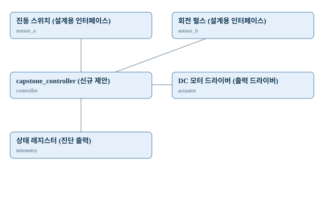

CAPSTONE / creative_motor_vibration_guard
모터 진동 보호 및 정지 제어
자체 창작 캡스톤: 진동 스위치와 회전 펄스를 조합해 이상 진동 누적 시 모터 구동 차단·재시작 인터록 정책으로 DC 모터 드라이버를 제어하고 상태 레지스터로 상태를 제공한다. 독립적인 신규 과제 설계서이며 구현 검증은 별도 단계다.

1. 전체 시스템 구조도
모듈·신호의 논리적 연결을 표시합니다. FPGA 외부 전기회로도나 실제 보드 핀 배선도는 아닙니다.

모듈별 입출력
| 모듈 ID | 모듈명 | 입력 | 출력 |
|---|---|---|---|
| sensor_a | 진동 스위치 (설계용 인터페이스) | sample | |
| sensor_b | 회전 펄스 (설계용 인터페이스) | sample | |
| controller | capstone_controller (신규 제안) | sample_a, sample_b | command, status |
| actuator | DC 모터 드라이버 (출력 드라이버) | command | |
| telemetry | 상태 레지스터 (진단 출력) | status |
2. 신호 연결표
| 송신 포트 | 수신 포트 | 설계 및 검증 조건 |
|---|---|---|
| sensor_a.sample | controller.sample_a | Conceptual only; define real width, valid and CDC |
| sensor_b.sample | controller.sample_b | Conceptual only; define real width, valid and CDC |
| controller.command | actuator.command | No physical driver implemented |
| controller.status | telemetry.status | Status mapping not yet implemented |
3. 하드웨어 구성·부품
| 부품 | 수량 | 신호·전원 | 확인 사항 |
|---|---|---|---|
| Basys3 | 1 | 3.3V FPGA I/O | 핀·XDC·리소스 확인 필요 |
| 진동 스위치 | 1 | 모듈별 확인 필요 | 전원과 FPGA 입력 전압 구분 |
| 회전 펄스 | 1 | 모듈별 확인 필요 | 데이터시트·풀업·레벨 확인 |
| DC 모터 드라이버 | 1 | 드라이버/전원 확인 필요 | 부하를 FPGA 핀에 직접 연결하지 않음 |
4. 실행소스 전체 보기
코드 원본은 보존합니다. 아래에서 펼쳐 읽거나 파일별로 열 수 있습니다. 전체 소스 ZIP 받기
INTEGRATION.md
# 모터 진동 보호 및 정지 제어
## 구현 수준
독립 캡스톤 설계안. RTL·테스트벤치·C·AXI·Vivado·실물 보드는 미구현/미검증.
## 기능 요구사항
- 입력 1: 진동 스위치 (전기적 특성·출력 신호·샘플 유효 조건을 확인한 뒤 연결)
- 입력 2: 회전 펄스 (서로 다른 샘플 주기와 비동기 이벤트를 구분)
- 제어 정책: 이상 진동 누적 시 모터 구동 차단·재시작 인터록. Reset과 타임아웃/센서 오류의 안전 상태 정의
- 출력: DC 모터 드라이버 (전원/구동 회로 별도 검토)
- 진단: 상태 레지스터 (유효값, 오류, 마지막 이벤트와 상태 구분)
## 회로 구조 (모듈명은 신규 제안, 실제 RTL 포트 아님)
진동 스위치 → sensor_a.sample → capstone_controller.sample_a
회전 펄스 → sensor_b.sample → capstone_controller.sample_b
capstone_controller.command → DC 모터 드라이버
capstone_controller.status → 상태 레지스터
## 구현 절차
1. 모듈별 실제 데이터시트·핀·3.3V 호환성 및 외부 부하 전원 검토
2. 두 입력의 샘플 시점, 이벤트 펄스, 클럭 도메인·Reset 정의
3. Controller FSM과 입력 유효성·타임아웃·우선순위 규칙 확정
4. 독립 RTL 및 자기검증 테스트벤치 작성 후 시뮬레이션
5. 필요한 경우 AXI GPIO/사용자 AXI IP로 MicroBlaze V 연결
6. Vivado 합성·타이밍·XDC·실물 보드 검증을 각각 별도 기록
## 검증 시나리오
- Reset 후 출력 안전 상태
- 입력 1만 발생 / 입력 2만 발생 / 두 입력 동시 발생
- 입력 변화 순서 반대 / 바운스 / 입력 무효 및 타임아웃
- 출력 구동 중 재입력 / 긴급 중지 / 복귀 동작
- 표시 및 레지스터 값과 실제 이벤트의 일치
## 안전 및 출처
Basys3 GPIO 3.3V, XADC 단극성 입력 0~1V. 5V 신호·모터·릴레이·서보 부하 직결 금지. 실제 보드별 전압 변환 및 구동회로 검증 필요.
독립적으로 작성한 설계안. 외부 코드·이미지 복제 없음.
5. 검증 결과
교육용 설계안만 생성. 실제 RTL, 시뮬레이션, AXI, 합성, 타이밍, 보드 시험 미실시.
| 검증 항목 | 현재 기록 |
|---|---|
| 설계 구조·연결 검사 | 통과 |
| Verilog RTL 시뮬레이션 | 미실시 |
| C 프로그램 자체 테스트 | 미실시 |
| RTL 합성 | 미실시 |
| FPGA 구현 | 미실시 |
| 타이밍 검사 | 미실시 |
| 실제 FPGA 보드 테스트 | 미실시 |
6. 출처·연결 안전
참고 및 작성 근거
Original educational concept; no external source code or image copied.
전기적 안전·제약
Basys3 GPIO 3.3V, XADC 단극성 입력 0~1V. 5V 신호·모터·릴레이·서보 부하 직결 금지. 실제 보드별 전압 변환 및 구동회로 검증 필요.